ElasticGraph
ElasticGraph is a general purpose, near real-time data query and search platform that is scalable and performant, serves rich interactive queries, and dramatically simplifies the creation of complex reports. The platform combines the power of indexing and search of Elasticsearch or OpenSearch with the query flexibility of GraphQL language. Optimized for AWS cloud, it also offers scale and reliability.
ElasticGraph is a naturally flexible framework with many different possible applications. However, the main motivation we have for building it is to power various data APIs, UIs and reports. These modern reports require filtering and aggregations across a body of ever growing data sets. Modern APIs allow us to:
- Minimize network trips to retrieve your data
- Get exactly what you want in a single query. No over- or under-serving the data.
- Push filtering complex calculations to the backend.
Libraries
ElasticGraph is designed to be modular, with a small core, and many built-in extensions that extend that core for specific use cases. This minimizes exposure to vulnerabilities, reduces bloat, and makes ongoing upgrades easier. The libraries that ship with ElasticGraph can be broken down into several categories.
Core Libraries (8 gems)
These libraries form the core backbone of ElasticGraph that is designed to run in a production deployment. Every ElasticGraph deployment will need to use all of these.
- elasticgraph: ElasticGraph meta-gem that pulls in all the core ElasticGraph gems.
- elasticgraph-admin: ElasticGraph gem that provides datastore administrative tasks, to keep a datastore up-to-date with an ElasticGraph schema.
- elasticgraph-datastore_core: ElasticGraph gem containing the core datastore support types and logic.
- elasticgraph-graphql: The ElasticGraph GraphQL query engine.
- elasticgraph-indexer: ElasticGraph gem that provides APIs to robustly index data into a datastore.
- elasticgraph-json_schema: ElasticGraph gem that provides JSON Schema validation.
- elasticgraph-schema_artifacts: ElasticGraph gem containing code related to generated schema artifacts.
- elasticgraph-support: ElasticGraph gem providing support utilities to the other ElasticGraph gems.
Dependency Diagram

AWS Lambda Integration Libraries (5 gems)
These libraries wrap the the core ElasticGraph libraries so that they can be deployed using AWS Lambda.
- elasticgraph-admin_lambda: ElasticGraph gem that wraps elasticgraph-admin in an AWS Lambda.
- elasticgraph-graphql_lambda: ElasticGraph gem that wraps elasticgraph-graphql in an AWS Lambda.
- elasticgraph-indexer_autoscaler_lambda: ElasticGraph gem that monitors OpenSearch CPU utilization to autoscale indexer lambda concurrency.
- elasticgraph-indexer_lambda: Provides an AWS Lambda interface for an elasticgraph API
- elasticgraph-lambda_support: ElasticGraph gem that supports running ElasticGraph using AWS Lambda.
Dependency Diagram

Extensions (4 gems)
These libraries extend ElasticGraph to provide optional but commonly needed functionality.
- elasticgraph-apollo: An ElasticGraph extension that implements the Apollo federation spec.
- elasticgraph-health_check: An ElasticGraph extension that provides a health check for high availability deployments.
- elasticgraph-query_interceptor: An ElasticGraph extension for intercepting datastore queries.
- elasticgraph-query_registry: An ElasticGraph extension that supports safer schema evolution by limiting GraphQL queries based on a registry and validating registered queries against the schema.
Dependency Diagram

Datastore Adapters (2 gems)
These libraries adapt ElasticGraph to your choice of datastore (Elasticsearch or OpenSearch).
- elasticgraph-elasticsearch: Wraps the Elasticsearch client for use by ElasticGraph.
- elasticgraph-opensearch: Wraps the OpenSearch client for use by ElasticGraph.
Dependency Diagram

Local Development Libraries (3 gems)
These libraries are used for local development of ElasticGraph applications, but are not intended to be deployed to production (except for elasticgraph-rack).
elasticgraph-rack is used to boot ElasticGraph locally but can also be used to run ElasticGraph in any rack-compatible server (including a Rails application).
- elasticgraph-local: Provides support for developing and running ElasticGraph applications locally.
- elasticgraph-rack: ElasticGraph gem for serving an ElasticGraph GraphQL endpoint using rack.
- elasticgraph-schema_definition: ElasticGraph gem that provides the schema definition API and generates schema artifacts.
Dependency Diagram

Versioning Policy
ElasticGraph does not strictly follow the SemVer spec. We followed that early in the project’s life cycle and realized that it obscures some important compatibility information.
ElasticGraph’s versioning policy is designed to communicate compatibility information related to the following stakeholders:
- Application maintainers: engineers that define an ElasticGraph schema, maintain project configuration, and perform upgrades.
- Data publishers: systems that publish data into an ElasticGraph application for ingestion by an ElasticGraph indexer.
- GraphQL clients: clients of the GraphQL API of an ElasticGraph application.
We use the following versioning scheme:
- Version numbers are in a
0.MAJOR.MINOR.PATCHformat. (The0.prefix is there in order to reserve1.0.0and all later versions for after ElasticGraph has been open-sourced). - Increments to the PATCH version indicate that the new release contains no backwards incompatibilities for any stakeholders. It may contain bug fixes, new features, internal refactorings, and dependency upgrades, among other things. You can expect that PATCH level upgrades are always safe–just update the version in your bundle, generate new schema artifacts, and you should be done.
- Increments to the MINOR version indicate that the new release contains some backwards incompatibilities that may impact the application maintainers of some ElasticGraph applications. MINOR releases may include renames to configuration settings, changes to the schema definition API, and new schema definition requirements, among other things. You can expect that MINOR level upgrades can usually be done in 30 minutes or less (usually in a single commit!), with release notes and clear errors from ElasticGraph command line tasks providing guidance on how to upgrade.
- Increments to the MAJOR version indicate that the new release contains some backwards incompatibilities that may impact the data publishers or GraphQL clients of some ElasticGraph applications. MAJOR releases may include changes to the GraphQL schema that require careful migration of GraphQL clients or changes to how indexing is done that require a dataset to be re-indexed from scratch (e.g. by having data publishers republish their data into an ElasticGraph indexer running the new version). You can expect that the release notes will include detailed instructions on how to perform a MAJOR version upgrade.
Deprecation warnings may be included at any of these levels–for example, a PATCH release may contain a deprecation warning for a breaking change that may impact application maintainers in an upcoming MINOR release, and a MINOR release may contain deprecation warnings for breaking changes that may impact data publishers or GraphQL clients in an upcoming MAJOR release.
Each version level is cumulative over the prior levels. That is, a MINOR release may include PATCH-level changes in addition to backwards incompatibilities that may impact application maintainers. A MAJOR release may include PATCH-level or MINOR-level changes in addition to backwards incompatibilities that may impact data publishers or GraphQL clients.
Note that this policy was first adopted in the v0.15.1.0 release. All prior releases aimed (with some occasional mistakes!)
to follow SemVer with a 0.MAJOR.MINOR.PATCH versioning scheme.
Note that all gems in this repository share the same version number. Every time we cut a release, we increment the version for all gems and release all gems, even if a gem has had no changes since the last release. This is simpler to work with than the alternatives.